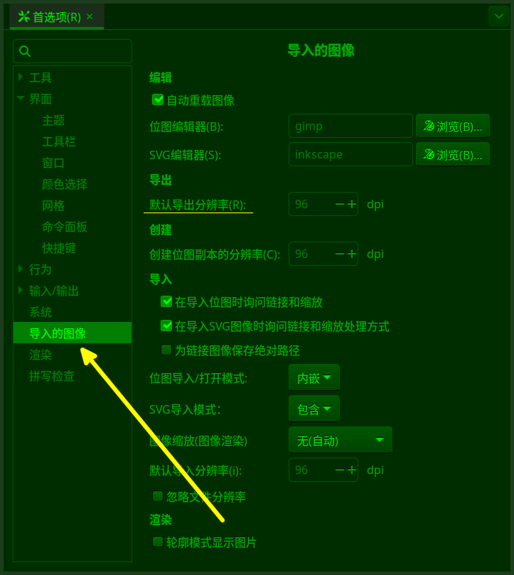
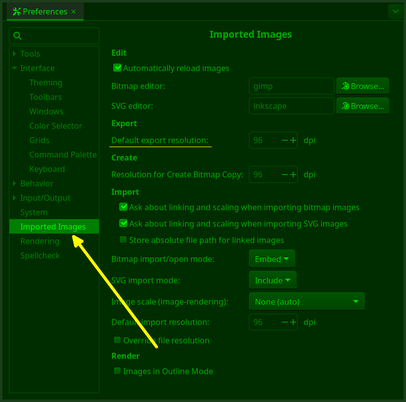

开源软件汉化质量记录
尝试信达雅，高于或等于商业品质
本文主要记录以下几个影响翻译质量的方向：
- 下面是几个汉化翻译的经验：
在翻译之前，熟练掌握软件的使用及应用，是精确汉化的重要条件；
字面翻译可能导致汉化翻译不精确，甚至是错误翻译；
最重要的原则：知道原文在说什么和想做什么，避免唯一化字面理解；
音译应该谨慎使用；
不熟悉软件，或者不熟悉软件的局部，应谨慎考虑翻译结果；
与行业内的老外充分沟通，因为老外，尤其是英语母语的老外，对于英文原文思想的理解更全面也更深刻；
UI翻译结果应该在软件中进行检查测试；
即使满足以上全部条件，也未必能做到高质量汉化，因为开源软件是松散组织，说服权限人员修改翻译结果所需要的精力可能远大于翻译工作本身；
开源软件的官方，以及开源软件的用户，很多人关心的其实是翻译的完成度，或者翻译完成百分比；而对于软件翻译的质量，并没有特别的期待，或者没有期待。原因主要是开源软件团队通常是松散组织，很难形成一般企业那样的有效的专门负责翻译质量的部门或职位，比如：
没有专门负责汉化的翻译人员；
汉化人员变动频繁；
汉化人员能力问题：英文能力、中文能力、翻译能力、对软件的熟悉程度、专业知识能力、相关知识面宽度、逻辑推理能力，眼光格局等等；
开源软件官方不重视；
开源软件官方没有资金和资源投入；
下面通过几个例子来论证与翻译质量相关的问题。
一、基础中英文水平能力：shape
严格说，应该是中学语文水平和中学英语水平对翻译质量的影响，比如shape，汉语翻译通常是形状、外形、图形等等，下面是正确翻译和错误翻译示例：
Shape tools
正确翻译：图形工具 ✓
错误翻译：外形工具 ㄨ
错误翻译：形状工具 ㄨ
The shape of the object (is diamond-shaped)
正确翻译：物体的外形 ✓
正确翻译：物体的形状 ✓
错误翻译：物体的图形 ㄨ
Create shapes (by clicking and dragging mouse)
正确翻译：创建图形 ✓
错误翻译：创建形状 ㄨ
错误翻译：创建外形 ㄨ
Drag mouse to shape the path
正确翻译：拖动鼠标修改路径的形状 ✓
正确翻译：拖动鼠标修改路径的外形 ✓
错误翻译：拖动鼠标修改路径的图形 ㄨ
二、软件熟悉程度：selection
译员如果对于所翻译的软件不熟悉，或者熟悉程度不够，就可能导致翻译质量出问题。
例如，在平面设计类软件中，selection多数情况下会被翻译成选区。
平面软件只做两件事：画选区和上颜色
GIMP、Inkscape、photoshop、illustrator这类平面绘图软件，其实就做两件事，一是创建选区，二是对创建的选区进行着色，其中创建选区的工作量占比超过80%，所以，学会怎么随心所欲地创建选区，也就学会了平面软件。
这个情况在矢量软件Inkscape中就是一个例外。Inkscape中很少能看到选区，或者叫静态选区，这与GIMP或者photoshop完全不一样。在GIMP/photoshop中，用矩形工具在画布上一划，就能创建一个静态的矩形选区。而在Inkscape中，使用矩形工具(  )，像GIMP/photoshop那样一划，结果只是创建了一个矩形的图形，而不是选区。如果换成选择工具(
)，像GIMP/photoshop那样一划，结果只是创建了一个矩形的图形，而不是选区。如果换成选择工具(  )做同样的操作，结果是选中被框选的对象，等待进一步处理。Inkscape中把选择工具框选所选中的单个对象或多个对象叫做selection，所以，在Inkscape中selection的意思应该是指选中的对象。
)做同样的操作，结果是选中被框选的对象，等待进一步处理。Inkscape中把选择工具框选所选中的单个对象或多个对象叫做selection，所以，在Inkscape中selection的意思应该是指选中的对象。
所以，在Inkscape中，selection应该像下面这样翻译：
your selections
正确翻译：你选中的对象 ✓
错误翻译：你的选区 ㄨ
only two selections
正确翻译：仅两个选中对象 ✓
错误翻译：仅两个选区 ㄨ
too many selections
正确翻译：太多的选中对象 ✓
错误翻译：太多的选区 ㄨ
delete your selections
正确翻译：删除选中的对象 ✓
正确翻译：删除选区 ㄨ
Inkscape 1.4 后续版本中会更新为选中对象。
三、字面翻译的局限：imported images
按字面翻译UI界面是开源软件汉化最常见的情况，但也是出问题最多的地方，看下面的内容。
Inkscape软件中，打开菜单【编辑⇨首选项】后有一项叫导入的图像,英文是imported images。如下图所示：
 图1：导入的图像中文界面截图
下面是它的原始英文版本：
 图2：导入的图像英文界面截图
仅从字面看，imported images翻译成导入的图像没有任何问题，逻辑上或者形式上都说得通，但对于那些经常使用inkscape的用户来说，如果真碰到问题，这个翻译就会带来麻烦：
从上面图1的中文界面截图中可以看到，导入的图像所包含的内容除了与导入有关，还有导出内容：默认导出分辨率，这个选项可以决定导出图像的默认分辨率。
在首选项菜单中，只有这一个页面与图像导出相关，其它任何地方都没有与图像导出相关的选项。
出问题的情况是，一个尺寸为600x300像素的矩形在导出时，如果导出分辨率使用的是300，那么导出的图像尺寸会莫名其妙地变为1975x937像素，即默认导出分辨率的数值导致导出图像的尺寸出现异常，或者错误。由于是默认设置，所以每一次导出位图时都需要在导出对话框中手动修改分辨率数值，以确保导出图像的尺寸正常。
这个时候，如果想避免每一次导出位图都要修改分辨率数值，就需要到首选项菜单中重新设置默认数值。而首选项菜单中，没有任何一个一级选项有涉及导出的字样，包括导入的图像也没有。这里的一级选项指的是打开首选项就直接可以看到的条目，这些条目都没有导出字样。这种情况下，我们一目十行的浏览首选项内容，想找到与导出相关的条目，通常要花很长时间才能找到，甚至最后还找不到。
而汉化时，如果我们不用导入的图像这个翻译结果，而是使用导入/导出来翻译imported images，用户就能够很快看到导出字样的条目，进而快速找到需要调整的分辨率选项所在的位置，高效解决问题，避免在首选项对话框中查来找去浪费时间。
我们没必要去研究开发者为什么把导出设置也放到导入的图像这个界面里，因为这并不重要；重要的是，译员的工作并不是要对开发团队负责，而是要对终端用户负责，这里就是对中文用户负责。而对于中文用户来说，大多数情况下他们并不关心英文原文是什么；而中文界面使用起来是否方便、是否易于理解和操作，这才是中文用户最关心也最需要译员解决的问题。基于这个理解，很多时候我们不按字面翻译UI，效果明显要更好一些。
所以，对于操作Inkscape软件的用户来说，imported images的翻译不按字面来才是更好的选择：
imported images:
正确翻译：导入/导出 ✓
错误翻译：导入的图像 ㄨ
这里仅仅讨论了最简单最直观的一个局限情况。在实际汉化工作中，字面翻译导致的问题远不止于此。
驿窗注：什么情况会修改默认导出分辨率
默认导出分辨率的默认值是96。通常情况下不需要修改这个数值，但需要长期以特定分辨率导出位图的时候，比如用于印刷的位图，一般会使用300这个分辨率，这时候就需要修改这个默认导出分辨率数值为300，然后就不用每一次导出位图的时候都去设置一次分辨率，那会降低工作效率。
截图中的dpi应为ppi
四、知识面宽度：viewbox
在Inkscape的UI界面上有一个词，叫做Viewbox，以前的版本把Viewbox翻译成视图框。繁体中文版一样。
驿窗注：Viewbox出处
Inkscape1.4 beta3 之后的版本：菜单【文件⇨文档属性➡显示➡Viewbox】 ✓Inkscape1.4 beta3 之前的版本：菜单【文件⇨文档属性➡显示➡视图框】 ㄨ
从字面上看，视图框这个翻译基本没问题，view解释为视图，box解释为框架，合在一起解释为视图框，很简练 ㄨ 。另外，从功能上看，Viewbox也确实是一个可视的范围，所以叫做视图框没什么问题 ㄨ 。出问题的地方在于，译员的知识面有限，只知道Inkscape，不了解svg编程语言及Inkscape与svg编程语言的关系。
Inkscape文件的原生格式是svg，svg是一种W3C编程语言标准，在svg语言编程中有一个通用属性是viewbox，专门用于定义SVG元素的可见区域和缩放比例。svg编程过程中，viewbox是要进行赋值的，如果viewbox被翻译成视图框，svg编程就会出问题，因为编程中并不能对视图框赋值，只能对viewbox赋值；即，我们需要把Viewbox当做函数来使用和理解。所以，viewbox不应该被翻译，而应该保持英文原文。
类似viewbox这样的软件汉化情况不多见，但确实存在。下面继续。
五、专业知识：color management
专业领域的翻译，经常会出现术语。这里有两个与色彩管理相关的专业术语：超色域警告、软打样。这两个术语在色彩管理中经常出现，比如在GIMP菜单【View⇨Color Management⇨Mark Out of Gamut Colors】就有一段英文注释对Mark Out of Gamut Colors这条命令进行解释说明，英文注释的内容如下：
When soft-proofing, mark colors which cannot be represented in the target color space
这一段注释之前被翻译为：
软件校对时标记出无法在目标色彩空间内展现的色彩。
- 这个翻译有两处错误：
软件校对 ㄨ
标记出无法在目标色彩空间内展现的色彩 ㄨ
这两处错误主要原因是译员不了解色彩管理这个比较偏门的专业领域：
在色彩管理流程中，soft-proof或者soft-proofing有专门的中文翻译，叫软打样，也有叫做屏幕打样，意思是指在电脑屏幕上模拟印刷的效果，与校对没有关系。
后面的英文被翻译成标记出无法在目标色彩空间内展现的色彩ㄨ也是同理，在色彩管理领域，它有对应的专门的中文翻译叫超色域警告✓。
错误翻译的另一个原因是遵守了字面翻译原则。
我们看下面这段描述：
有一种鸟，广泛分布于欧洲、中亚、东南亚、东亚。它们通常在树上筑巢，身形与其它鸟类相比较小，身体大部分为褐色，且相对其它鸟类有一点比较特別，就是它在地面上走路是用跳的，跳来跳去。体长为12.5至14公分左右，体形短圆，具有典型的食谷鸟特征。麻雀雄雌同形同色，头顶和后颈为栗色，面部白色，双颊中央各自有一块黑色色块，这块黑色的小脸蛋是鉴别其物种的关键特征。上体褐色，具黑色斑点，所有飞羽、小覆羽、初级覆羽均为黑褐色；具两道污白色翅斑；尾羽褐色；下体污白色；虹膜为深褐色；喙呈圆锥形，比较粗壮，呈黑色；足为粉褐色。
上面这一段斜体文字几乎描述了这种鸟的全部特征，但就是不说这种鸟是麻雀。而农村家庭长大的孩子通过上面的描述，基本都能判断出来是指麻雀。所以，直接说麻雀就好。
再换个简短的，比如和同事开会中，同事说：快要中午了。你看看表说，确实快12点了。这个时候，同事想表达的，应该是停止会议去吃饭，而不是表达现在几点。中午是对方的字面意思，吃饭是对方没说但想说的内容，译员不能只翻译前者而不管后者；相反，译员必须搞清楚后者是什么，并在需要时候用后者来进行翻译。
同理，上面的中文翻译标记出无法在目标色彩空间内展现的色彩ㄨ确实详细说明了那个命令在做什么，但就是不说它是超色域警告。在色彩管理流程中，它就是超色域警告。
所以，上面那段英文When soft-proofing, mark colors which cannot be represented in the target color space，正确的中文翻译应该是软打样时显示超色域警告。✓
- proof：
GIMP中之前翻译为校对ㄨ，驿窗已经提交更新，修正为打样✓。驿窗遍历了GIMP中所有涉及proof的地方，应该都是指打样或软打样，没有其它含义指向。这个是色彩管理专业领域知识，已经建议GIMP翻译团队作为专业术语处理。
- soft-proof(ing)：
GIMP中之前翻译为软件校对ㄨ，驿窗已经提交更新，修正为软打样✓。这个是色彩管理专业领域知识，驿窗已经建议GIMP翻译团队作为专业术语处理。
下面是另一个简单的专业术语翻译正确与错误的示例：
color management：
正确翻译：颜色管理 ✓正确翻译：色彩管理 ✓错误翻译：彩色管理 ㄨ
专业领域翻译示例还有很多，基本都是作为术语处理，这里不一一讨论。
专业翻译的术语概念，是出于对专业领域的尊重和遵守，有其必要性，比如我们在一些战争电视剧中会听到通信兵对着话筒讲数字的时候，数字0发音为洞，数字7发音为拐，这其实就是术语的必要性和应用意义。当译员专业领域的知识能力不足的时候，就可能会导致翻译质量不好或者翻译错误，因为专业术语被当成日常用语进行翻译，导致专业含义缺陷。
其实，专业术语在日常也有很常见的应用，比如火警电话119，我们交流的时候不会发音成壹壹九，而会发音成腰腰九，这就是专业术语的日常应用。
六、上难度的综合能力：color stop 信达雅
对于color stop (gradient stop)的翻译，先说结论：
正确翻译：色标 ✓错误翻译：止点/停止点 ㄨ错误翻译：分段点 ㄨ错误翻译：过渡点 ㄨ错误翻译：端点 ㄨ驿窗注：color stop的多种表达方式
虽然在GIMP、Inkscape、illustrator、photoshop、QuarkXPress等平面相关软件中的渐变工具中都会用到color stop，但它的英文说法并不统一，下面是不同软件中color stop的不同说法：
GIMP：color stop, stop, startpoint, midpoint, endpointInkscape：gradient handles, gradient stop, stopkrita：gradient stop, stopscribus：color stop, color pointillustrator：color stopphotoshop：color stopInDesign：color stop, beginning point, midpoint, endpointQuarkXPress：color stop, start-point, midpoint, endpoint尽管英文对于color stop有多种表达形式，但都是指同一个东西，性质上和功能上都没有任何区别，接下来我们以color stop做为代表进行讨论。
- 下面是几个软件中color stop当前中文翻译情况：
GIMP：过渡点
Inkscape：停止点/分段点，驿窗已经更新为色标
krita：色标
photoshop：色标
illustrator：色标
首先，停止点是不恰当的翻译，因为color stop并不是停止的概念，而是标记，带有分界/划分的意义，可能停止，也可能不停止。
color stop中的stop，字面及含义上，比较适合的汉语意思是车站，或者旅途中的一站。但翻译成色站好像有点不伦不类。
参考photoshop和krita的翻译，color stop翻译为色标，确实比较合适。驿窗并没有做到从正面去推导出这个翻译结果，下面是反推的解释，看有没有道理：
汉语有一个词，叫界标，用来标记和划分不同的地域或区域范围。还有一个词可以参考：浮标，用来指示某个范围。无论界标还是浮标，它们的共通点是，本身即是指代区域或范围属性，不是直线属性，也不是点属性。
界标与色标相比，共同点上面已经提到，都是对区域或范围进行划分。虽然二者在具体表现形态上都只是一个点，但其本身及结果是必然的范围划分或者区域分界，所以其具体指向和影响的结果不会只是一个点或一条直线，而是区域或者范围。这一特性，在停止点这个翻译上无法体现，在过渡点这个翻译上也很难体现，包括分段点和端点也不贴切；这几个翻译要么是从字面翻译，要么是从形式上翻译，都没有接触到其功能的本质。因此，参考界标/浮标，用色标应该是最符合color stop的翻译结果。不知道是哪位前辈最先把color stop翻译成色标的，如果那位前辈是使用正推法得出色标这个词，那就太令人叹服了。以驿窗的经验，用正推把color stop翻译成色标非常难，因为它离字面意思已经很远。
还有一点，色标是两个汉字，停止点或者过渡点都是三个汉字。把color stop翻译成两个汉字，比翻译成三个汉字要难很多，但和三个字相比，两个字的色标用起来确实会让人感觉到非常通顺、非常舒服：即能表达color stop的含义，又非常简练易理解易记，还朗朗上口。
综合上面的讨论，译员有必要思考一个问题，即：英文原文到底想说什么和想做什么，是译员首先要弄清楚的关键问题，这远比搞清楚原文怎么说要重要得多。然后在这个基础之上，译员可以进行更高层级的探索。而这里把color stop翻译成色标，可能已经触碰到翻译水平的一个重要层次：雅。翻译的信达雅
驿窗注：color stop的本质
color stop在形式上通常是一个点，与界标/浮标一样。color stop这个点所设置的颜色，目的不是想影响或改变当前这个点的颜色，而是要影响这个点两侧的区域的颜色，是范围概念，以达到颜色在某个范围内渐渐变化的目的。这个目的与界标/浮标的功能完全一样。
综上所述，上面提到的color stop及相关的几个词汇的翻译可以按以下方式处理：
start-point：起始色标、端点色标
mid-point：中间色标
end-point：终点色标、结束色标、端点色标
gradient stop：色标
color stop：色标
- 另一个思考：
GIMP及其它开源软件在国内的应用比国外晚很长时间，国内开始关注GIMP时，photoshop已经在国内流行很久。换句话说，国内接触GIMP的用户，很多都有过photoshop的使用经验，这就表示，对于color stop这个词汇，很多用户其实已经建立了一个中文概念，就是色标。而对于色标这个翻译，在大方向上，如果没有根本性错误，也没有较大语义偏差的情况下，GIMP UI及InkscapeUI中的翻译与photoshopUI保持一致(向ps看齐)，对于用户来说无疑更友好；无论用户是先有photoshop使用经验，还是先有GIMP使用经验，在二者之间切换时，在color stop这这里不会有任何障碍。相反，如果翻译不一致，那么就会存在障碍，有可能需要花时间精力去做进一步的确认和熟悉，也影响用户之间的交流，这样就对用户不太友好。生存本就不易，学习软件又花费了很多时间和精力，做为译员能在汉化翻译上帮助用户减少一点点麻烦，何乐而不为。
这是从更广泛的角度来讨论翻译问题，可能考验译员的眼光和格局。
上面已经从几个不同的角度论述了几个开源软件汉化质量相关的问题，接下来我们列出一些没有完全解决的问题。
七、责任心：译员的心态决定一切
无论上面提到的哪一个因素，最后的汉化质量都会被译员的心态所左右。译员的目的是唯一能体现整体汉化质量的恒定要素，也是影响汉化质量的最重要因素，下面详细列出几个方向：
八、挑战
这里列出部分驿窗认为还需要改进的汉化：
平面软件(GIMP、Inkscape、Krira等)中的color wheel目前有以下翻译，驿窗认为应该翻译为色相环：
色轮
色盘
色圈
色盘
色环
色相环
Inkscape的工具中有一个叫3d工具，英文是3D Box Tool，目前的中文翻译为3D透视工具、3D工具、立方体工具等等。驿窗考虑更新为下面的翻译，目前比较倾向于透视工具：
立体盒型工具
透视盒子工具
透视箱盒工具
透视工具
未完稿……
最近一次更新：2024-10-29
开源软件发展已经很多年了，没法从零开始，进一步提升汉化质量的一个简单有效的办法是统一把控，即由一个相对资深或公认的译员对汉化内容进行二次整体把控。那些第一关的把控人员先真正熟悉软件本身，基本上就能排除大部分错误，再统一由进一步的把控人员进行英文水平、中文水平、全面性知识、专业性知识、逻辑推理、眼光格局等进行整体把控，做到真正为用户着想，才能更有力量地去推动开源软件的发展。这样也能够做到把翻译的质量提高一到两个层级，向信达雅的雅更进一步。
另外的问题：
由于Inkscape的汉化只要一经提交就一定会被通过，导致驿窗对汉化结果很担心，担心汉化效果不好会影响用户体验，甚至影响用户操作和使用。所以，汉化的心态从最初的看着不好就改变为现在的 小心再小心、谨慎再谨慎、核实再核实的境况，这也导致整体汉化速度急剧下降，因为要花费大量时间研究软件的使用、参数的含义和功能、翻译的信达雅等等问题。
不过，这也带来了另一个好处，就是汉化结果基于符合驿窗期望的等于或高于商业品质的目标，经得起中文用户的长期检验。然后，与好处同时存在的另一个不好的问题是，inkscape有些汉化质量非常低，甚至完全无法接受，这个情况的主要原因是，这些低质量汉化是驿窗接手前的汉化，驿窗还没来得及修改，进度慢所以需要一点一点来，有经验或有能力的用户可以联系驿窗更新，或者直接向官方提交汉化更新。驿窗对于inkscape汉化的结果，已经建立日志文件，参考 inkscapeUI。
同时，驿窗也对未来开源软件汉化提高质量所期望的条件，比如，有一个专门供汉化译员交流汉化想法的地方，比如论坛，或者论坛的一个版块；另外，在此基础上公推具体的高等级汉化质量把控人员、定期更新汉化译员名单及联系方式、定期更新翻译变更的具体原因供大家参考讨论等等。之所以要公开汉化变更的原因，主要是因为一个译员可以在某一个或几个方面很专业和很权威，但没有任何一个人可以在所有的领域都比其它人更专业和权威，所以博采众长才是让开源软件整体汉化质量提高的唯一途径，一个用户，很可能是某方面的专家，对于某一个词汇的汉化，就可能有专业的独到理解，这对于汉化质量非常重要。典型的例子就是平面软件inkscape、gimp、krita的关于颜色和色彩管理的汉化，这是专业领域，非专业人员很难做到正确汉化翻译。
还有一点，就是有一些问题是无法解决的，比如译员之间对于某一个具体条目的汉化持不同观点的时候，互相无法说服，这个时候，那个有决定权的译员就可以凭借权力来决定最终的汉化结果。尤其是有权限的译员个人很难沟通的情况下，这个问题会非常明显。这个现状与开源软件的组织形式有关，开源软件不像商业公司那样有专门的负责汉化的人或部门，只能靠个人贡献，而这种贡献方式一方面无法保证译员个人的能力水平，另一方面也无法保证译员个人的长期稳定性，这导致开源软件汉化质量难以保证，或者难以达到商业质量同等标准。